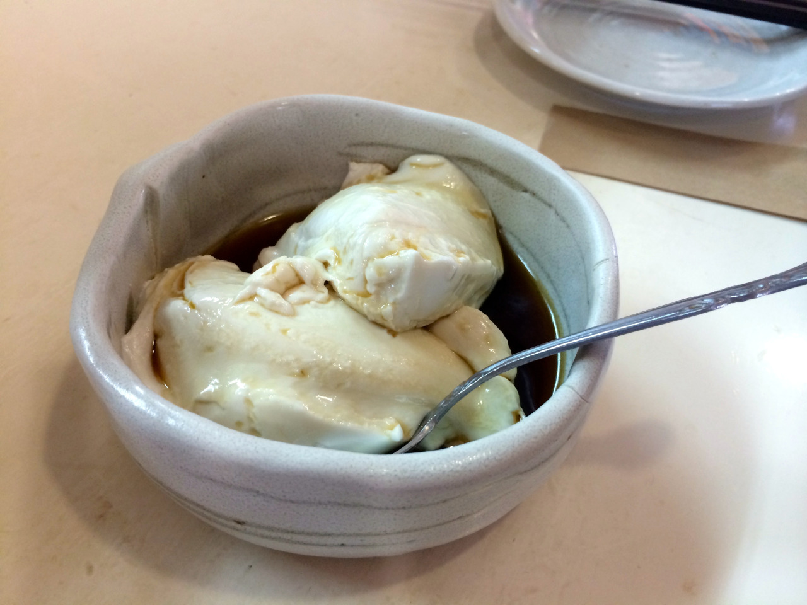
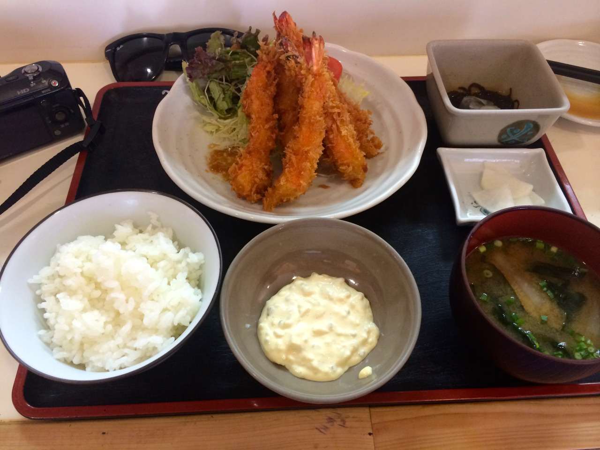
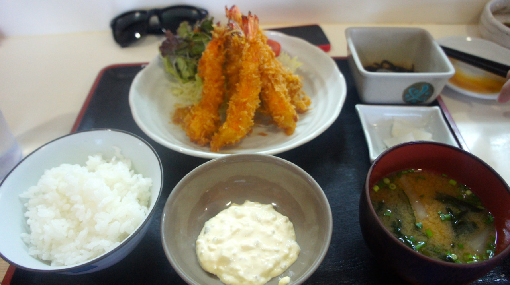
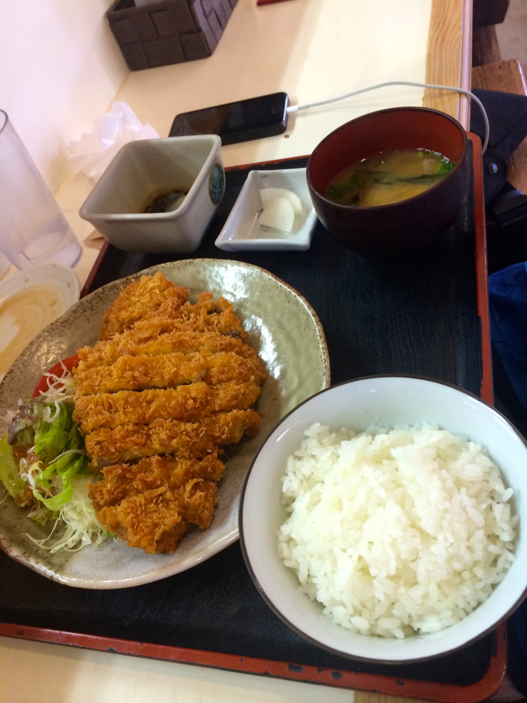

紀乃川食堂
603 Kenken
Motobu, Kunigami District, Okinawa Prefecture 905-0226
오키나와를 가신다면 두번가세요. 아니 세번가세요.
일단 차가 없으면 가기 힘드니 렌트를 하시고. 일단 가서 오늘의 정식중에 대충 고기를 선택해서 시키시면 됩니다. 음. 돈까스가 그자리에서 만들어서 튀겨줍니다. 생고기에서 부터 시작해서 바로 튀겨줌. 새우튀김은 새우가 탱글탱글하고 튀김옷이.. 주의해서 먹지 않으면 입천장이 까질것 같은 바삭함을 가지고 있습니다.
그리고 저 두부는 쫄깃하고 약간 치즈같은 맛이 나는데 완전맛있어 ㅠㅠㅠㅠㅠㅠ
돈까스가 만오천원이 좀 넘어가지만 가격과 양으로 치면 훌륭합니다. 매우 인기가 많고 공간이 그렇게 넓지 않으니 점심시간 피해가는것도 한가지 방법. 주차장은 있으니 신경쓰지 마시고 주차를 하지 못할 정도라면 안에도 못들어가는겁니다..
여튼 ㅠㅠ 오키나와 간다면 저기를 가기 위해서 리조트도 뛰쳐나가서 렌트를 해서 달려가고 싶음 ㅠㅠ 츄라우미 근처라서 좀 멀긴 하지만 한번 맛을 봤으니 ㅠㅠ
저 두부가 전통두부인데 딴곳에서도 팝니다. 이름이.. 까먹었는데 두부가 한종류라면 아마 10중 8,9는 저 두부라고 생각됩니다.